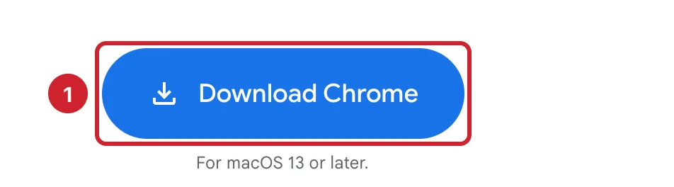
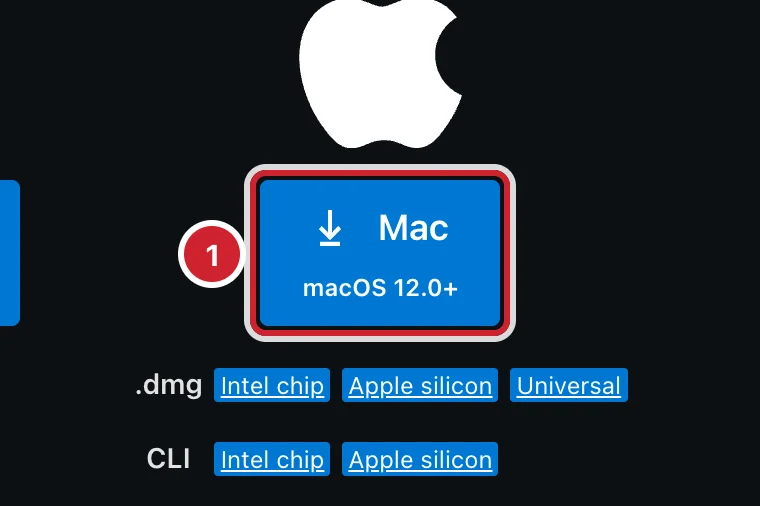

Модуль 0. Старт. Урок 2
Терминал, установка программ, пути и папки
Фронтенд с нуля
Сегодня собираем рабочее место: к концу занятия всё установлено и проверено
Терминал уже есть на Mac. Остальное ставим сегодня.
| Значок | Клавиша | Пример |
|---|---|---|
| ⌘ | Command | ⌘C — копировать |
| ⌥ | Option | ⌥⌘I — DevTools |
| ⇧ | Shift | ⇧⌘P — палитра команд |
| ⌃ | Control | ⌃C — остановить команду |
Без пробелов, без кириллицы, не в iCloud.
cd devmkdir hellolsLast login: Thu Sep 11 10:24:15 on ttys0001mary@MacBook-Air ~ % 2
⌘+Пробел → «Терминал» → Return
ls-a~/devls -a ~/dev — показать все файлы в папке dev, включая скрытыеls ≠ LS, dev ≠ Devcd "my folder"mary@MacBook-Air ~ % cd dvecd: no such file or directory: dve
| Команда | Что делает |
|---|---|
pwd |
Где я? |
ls, ls -a |
Что здесь? Со скрытыми |
cd папка |
Перейти в папку |
cd .. / cd ~ |
На уровень выше / домой |
Tab — дописать имя, ↑ — прошлая команда, ⌃+C — стоп
| Команда | Что делает |
|---|---|
mkdir имя |
Создать папку |
touch файл |
Создать пустой файл |
cp / mv |
Копировать / переместить, переименовать |
rm файл |
Удалить без Корзины |
open . / code . |
Открыть папку в Finder / в VS Code |
mary@MacBook-Air ~ % mkdir devmary@MacBook-Air ~ % cd devmary@MacBook-Air dev % mkdir hellomary@MacBook-Air dev % cd hellomary@MacBook-Air hello % touch index.htmlmary@MacBook-Air hello % lsindex.htmlmary@MacBook-Air hello % open .


.zipShell Command: Install 'code' command in PATHnode -v
npm -v
git --version
code --versioncommand not found → ⌘Q, открыть Терминал заново
index.html.txt — писали в TextEditsudo перед командойСобираем папку сайта, не трогая мышь
pwdmkdir, touchcode .opencp, mv, rm